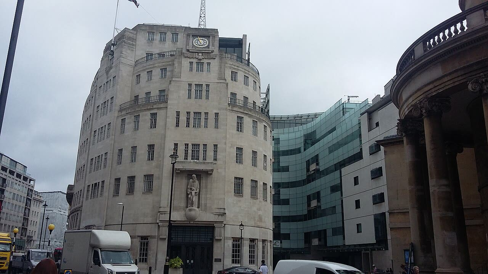

Trump contro la BBC: il giudice non archivia, la causa per diffamazione va avanti
Il giudice non ha condannato la BBC: ha solo detto che la causa può andare avanti. Trump deve rispondere sotto giuramento entro l'11 dicembre.
Redazione Contrappunto · aggiornato il 11.11.2026


Martedì 10 novembre 2026 il giudice federale Jeffrey T. Kuntz, in Florida, ha respinto la richiesta della BBC, il servizio pubblico radiotelevisivo britannico, di archiviare la causa per diffamazione intentata da Donald Trump. Trump l'ha avviata a dicembre 2025 per un documentario del programma Panorama, andato in onda poco prima delle presidenziali americane del 2024: univa due parti del discorso del 6 gennaio 2021, il giorno dell'assalto al Campidoglio, e faceva sembrare che avesse invitato direttamente alla violenza. La BBC si è scusata per il montaggio ma nega la diffamazione. Trump chiede almeno 10 miliardi di dollari, 5 per diffamazione e 5 per violazione di una legge della Florida sulle pratiche commerciali. Il giudice ha respinto la seconda accusa: la prima va avanti, ma nessuna delle due è stata decisa nel merito.
Vedi di più: 5 parole spiegate, cosa si racconta
Cosa si raccontaRepubblica titola che il giudice «respinge la richiesta della Bbc» e Il Fatto che «Trump vince il primo round»; Trump parla di «A Huge Victory» e la BBC di una decisione che la sorprende ma che rispetta. Reuters, CBS e la stessa BBC precisano che il giudice non ha deciso se Trump ha ragione: ha ritenuto le sue accuse sufficienti per continuare. Il Washington Examiner, di destra, sottolinea che per il giudice la BBC avrebbe agito con «actual malice». [la Repubblica] [Il Fatto Quotidiano] [Euronews] [BBC News] [NBC News (Reuters)] [CBS News] [Washington Examiner]
- Richiesta di archiviazione (motion to dismiss)
- La BBC ha chiesto al giudice di chiudere la causa subito, senza processo. Il giudice ha risposto soltanto che le accuse di Trump, per come sono scritte, bastano per continuare: non ha stabilito che siano vere.
- «Sapeva o doveva sapere» (actual malice)
- Per il giudice è plausibile che la BBC «knew or should have known», sapesse o dovesse sapere, che il montaggio era fuorviante. È il livello di colpa richiesto a chi fa causa per diffamazione da personaggio pubblico, e Trump dovrà ancora provarlo.
- Giudizio sommario (summary judgment)
- Fase successiva in cui il giudice può decidere la causa prima del processo; altrimenti si arriva al processo. Il giudice ha scritto che la prova del danno è «left for another day», rinviata.
- Deposizione (deposition)
- Risposte date sotto giuramento alle domande degli avvocati della controparte. A Trump è stato ordinato di darle entro l'11 dicembre.
- Servizio pubblico
- La BBC è finanziata con denaro pubblico (Reuters: «publicly funded»); come la Rai in Italia, risponde ai cittadini che la pagano.
- Il giudice federale Jeffrey Kuntz ha respinto la richiesta della BBC di archiviare la causa per diffamazione di Trump, ma ha respinto l'accusa sulle pratiche commerciali: la richiesta scende da 10 a almeno 5 miliardi di dollari (BBC, Euronews, Dawn).
- Il giudice non ha deciso nel merito: se Trump può provare le accuse e il danno è «left for another day» (BBC, CBS, Euronews).
- Trump deve rispondere sotto giuramento alle domande della BBC entro l'11 dicembre, pena sanzioni fino alla possibile archiviazione (BBC, Euronews, CBS).
Repubblica titola «respinge la richiesta della Bbc», Il Fatto «Trump vince il primo round», e Trump scrive «A Huge Victory». BBC, Reuters e CBS sono più precise: il giudice Kuntz ha ritenuto plausibili le accuse di Trump, quanto basta per andare avanti, ma non ha deciso chi ha ragione. Ammissibile non vuol dire fondata, e nessuno è stato condannato. Per noi la BBC ha sbagliato, e lo ha ammesso: una tv pubblica, pagata dai cittadini come la Rai con il canone, non taglia un discorso per fargli dire altro. Ma un presidente che chiede miliardi a chi lo racconta pone un altro problema di libertà di stampa. Diciamo entrambe le cose. [1] [2] [4] [5] [6] [7]
La verifica punto per punto4 passaggi, 8 fonti
Qui sotto ogni cosa scritta sopra, una per una, con le fonti. Confermato: lo dice un documento originale o più fonti lette. Plausibile: lo riportano fonti serie, ma non abbiamo letto l'originale. Discordante: le fonti danno numeri diversi, e diciamo quali. Ipotesi e Opinione sono il nostro ragionamento, separato dai fatti.
Cosa ha deciso il giudice, e cosa no
Martedì 10 novembre il giudice federale Jeffrey T. Kuntz, del distretto meridionale della Florida e nominato da Trump (Washington Examiner), ha respinto la richiesta della BBC di archiviare la causa per diffamazione, perché Trump ha sostenuto in modo plausibile che l'emittente ne abbia danneggiato la reputazione e sapesse o dovesse sapere che il filmato era fuorviante (NBC-Reuters, Euronews, Dawn). Ha invece respinto l'accusa sulla legge della Florida contro le pratiche commerciali sleali, perché il documentario non è un discorso commerciale: ogni accusa valeva almeno 5 miliardi di dollari, quindi la richiesta scende da 10 a almeno 5 (BBC, Euronews, Dawn). Non ha deciso nel merito: «Whether President Trump can prove these claims and establish he sustained damages at summary judgment or trial is left for another day» (BBC, CBS, Euronews). Ha anche scritto che il montaggio «was not trimming around the edges but creating something different than what was stated in the speech», e per Repubblica non ha accolto la tesi della BBC di un normale taglio di un discorso di settanta minuti in dodici secondi (Euronews, Dawn, Repubblica).
Cosa viene dopo e cosa dice la BBC
Il 22 ottobre un giudice federale di Miami ha ordinato a Trump di rispondere sotto giuramento alle domande dei legali della BBC entro l'11 dicembre, pena sanzioni fino alla possibile archiviazione della causa, salvo proroga del periodo di raccolta delle prove; per la BBC, Trump ha detto che sarà disponibile nella seconda o terza settimana di gennaio (BBC, Euronews, CBS). La BBC ha commentato: «We are surprised by this decision but respect the Court's authority and note the case will now proceed to the next stage» (BBC, CBS). Si era già scusata, dicendo che la trasmissione aveva dato «the mistaken impression that Trump made a direct call for violent action»; per il caso si sono dimessi il direttore generale Tim Davie e la direttrice delle news Deborah Turness, e l'emittente nega che il programma abbia causato a Trump un danno reale (BBC, Euronews, Dawn, Repubblica). Sulla diffusione negli USA, la BBC ha sostenuto che il documentario non era disponibile lì e i legali di Trump hanno ammesso di non avere prove che lo fosse su BritBox o sul sito (BBC); per Repubblica non è stato trasmesso in Florida.
Quanto distano le due frasi montate
Repubblica scrive che la seconda frase arriva «dopo circa 50 minuti» dalla prima; CBS riferisce che per i legali di Trump le due clip erano distanti 55 minuti. Il giudice parla di «time disparity» senza dare, nelle frasi citate, un numero.
Il nostro punto
La BBC ha sbagliato e lo ha ammesso: una tv pubblica, pagata dai cittadini come la Rai con il canone, deve rispondere di un montaggio che fa dire a un uomo quello che non ha detto, e vale lo stesso metro per il servizio pubblico italiano. Ma un presidente che chiede miliardi a chi lo racconta pone un'altra questione di libertà di stampa, e noi diciamo entrambe le cose. Quindi la BBC si difenda nel merito, provando che il danno non c'è, e Trump risponda sotto giuramento entro l'11 dicembre: la decisione del giudice non assolve né condanna nessuno dei due.
Fonti8, tutte con il link
- Sareen Habeshian, Judge allows Trump's $10bn defamation case against BBC to proceed (11 novembre 2026) (BBC News) · consultata il 11.11.2026
- Simon Ormiston, Trump's $10bn defamation case against BBC to go ahead (11 novembre 2026) (Euronews) · consultata il 11.11.2026
- US judge rejects BBC bid to dismiss Trump defamation suit (11 novembre 2026, AFP) (Dawn) · consultata il 11.11.2026
- Giudice respinge la richiesta della Bbc di archiviare la causa per diffamazione di Trump (11 novembre 2026) (la Repubblica) · consultata il 11.11.2026
- Trump vince il primo round: la causa contro la Bbc va avanti (11 novembre 2026) (Il Fatto Quotidiano) · consultata il 11.11.2026
- Melissa Quinn, Federal judge denies motion to dismiss Trump's defamation case against the BBC (11 novembre 2026) (CBS News) · consultata il 11.11.2026
- U.S. judge says Trump's $10 billion BBC defamation case can proceed (11 novembre 2026, Reuters) (NBC News (Reuters)) · consultata il 11.11.2026
- Judge denies BBC bid to dismiss Trump defamation lawsuit (11 novembre 2026) (Washington Examiner) · consultata il 11.11.2026
Testo preparato con strumenti di intelligenza artificiale e pubblicato senza revisione umana. Come lavoriamo